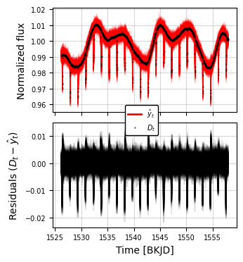
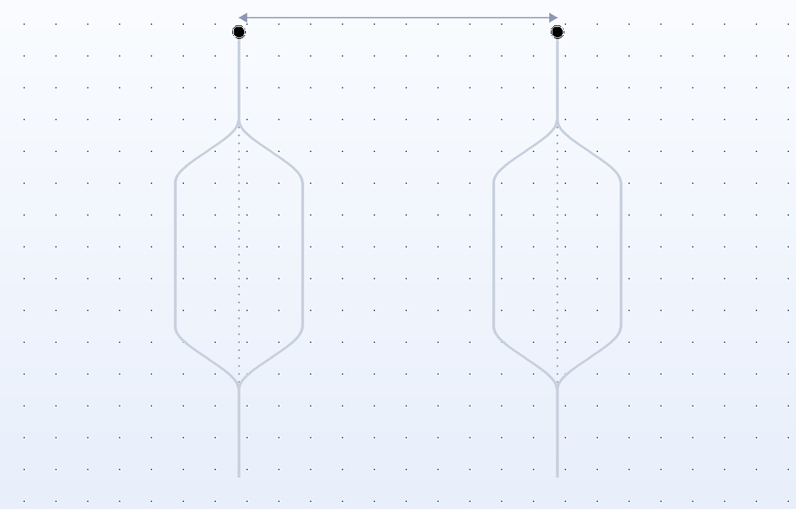

Research
My research interests lie in exoplanet science, computational astrophysics and the development of statistical methods for astronomical data analysis. I am particularly interested in understanding the formation, structure and evolution of planetary systems through observations and physical modelling.
Bayesian Time-Series Analysis
Autoregressive Integrated Moving Average (ARIMA) models are a powerful suite of models which were traditionally used in finance and stock price forecasting. We characterize a single model by the respective order of each component -- AR(p), MA(q) and the differencing order (d). How do we select the right order for any given data without overfitting? Traditional methods used heuristic criteria and modern methods use the Akaike Information Criteria (AIC) and Bayesian Information Criteria (BIC). In this aspect, I built NestAR (Nested Sampling for ARIMA, which combines a GPU-accelerated nested sampler from blackjax with my own vectorized framework of ARIMA models. NestAR can be applied to a diverse range of astronomical time series data like sunspot number counts and stochastic variability in differnet lightcurves from Kepler and TESS.

Exoplanet Atmosphere-Interior Modelling

Tests of Quantum Gravity
In the quest of finding the ultimate quantum theory of gravity, how do we empirically establish that gravity is indeed quantized and does not exist in some semi-classical state? My master's essay reviewed some of the recent proposals for testing this quantum coherent nature of gravity. One such proposal is the Bose-Marletto-Vedral (BMV) experiment which proposes to test quantum gravity by witnessing gravitationally induced entanglement between two test masses. The experiment requires holding particles in a coherent superposition for a sufficiently long timescale, however decoherence poses a significant barrier to this. I proposed an optimization to this experiment by asymmetric interferometric splitting of the test masses which could singificantly reduce this time requirement.
